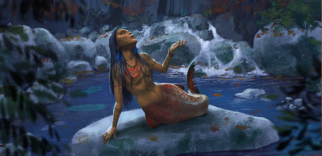
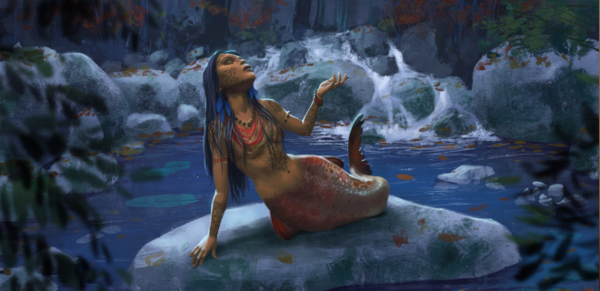

- Home: Amazon River, Brazil
- Species: Mermaid
- Physical Traits: long black hair, brown eyes, tan skin1
- Abilities: combat, singing
Iara is a common Brazilian folk legend originating from the indigenous tribes of the Amazon. Her name is derived from the Indigenous Tupi-Guarani word luara- "the one who lives in the waters."Amazon River, Brazil (hover to see Iara) 
- Home: Amazon River, Brazil
- Species: Mermaid
- Physical Traits: long black hair, brown eyes, tan skin1
- Abilities: combat, singing
The Warrior's Fate
In the heart of the Amazon, there lived a fierce and beautiful warrior named Iara. Her strength and skill in battle were unmatched, earning her the admiration of many. However, her prowess also sparked jealousy among her brothers, who plotted against her. In a cruel act of betrayal, they ambushed Iara to rid themselves of their rival. However, Iara’s exceptional strength and combat prowess allowed her to turn the tables, and she ended up killing her brothers.From Human To Fish
Fearing her father’s wrath —he was the tribe’s shaman— she fled. Despite her attempts to escape, her father found her and, as punishment for the death of her brothers, cast her into the river. The river’s fish, moved by her plight, transformed the beautiful young woman into the mermaid Iara. Since then, Iara has lived in the Amazonian rivers, luring men with her enchanting beauty and song, only to drag them to their deaths at the river’s bottom. It is said that if a man manages to resist Iara’s allure, he falls into madness, slipping into a stupor that only a shaman can cure.
All information obtained came from: Brasil Escola